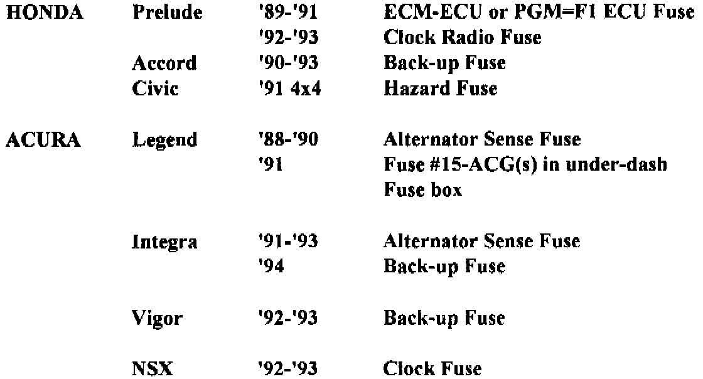

A/T - Trouble Codes
Technical Bulletin # 187TRANSMISSION: All computer shifted transmissions
SUBJECT: Trouble Codes
APPLICATION: Honda/Acura
DATE: Oct 93
Honda/Acura Trouble Codes
Honda and Acura transaxle trouble codes are communicated by either flashing an LED on the transaxle computer, or by flashing the 'S' or 'D4' shifter status light on the instrument panel after connecting a service connector. Make sure you look up your year and model so you know where and how to read your transaxle trouble codes.
Note
All Honda/Acura systems flash a shift status light on the instrument panel when a problem is first noticed by the computer. This initial flashing is NOT a trouble code. it just tells you to go looking for codes.
Getting The Codes
The following models flash an LED on the side of the transaxle computer, whenever the key is on. Using the chart below, locate the computer and watch the LED flash you your trouble codes. These systems Follow Code Format '1'.
Honda - Prelude '88-'90 & all '91 2.1 Liter
The computer is located under the front edge of the front passengers carpet. Remove the door sill and right kick panel so that the carpet will cooperate.
Prelude - '91 2.0 Liter
The computer is located behind the center console. Work from the right side of the console unit, and you should be able to see it.
Civic 4X4 - '91
The computer is located under the drivers seat.
Acura, Integra '90-'93
The computer is located behind the left side of the instrument panel, next to the inner fender panel. Use the same style procedure and precautions listed under '91 2.0 liter Prelude.
Legend '88-'90
The computer is under the right front seat, unless the engine controller is there. Then it'll be under the left front seat. Since that's not a lot of help, here's how to really tell. The transaxle computer is under a front seat, and its LED aims to the rear. The transaxle controller has only one LED. The engine controller has two, a red and a green one. You want the box with only one LED.
The following models have a 'Service Check Connector' hanging around in one of three places. It's a two pin, two wire connector that is not hooked up to anything. Using a jumper wire, you hook the two pins together, turn the key on and watch either the 'S' or 'D4' light on the instrument panel for your trouble codes. Use the chart below to find out where your connector is hiding. These systems follow code format '2'.
HONDA Accord '90-'93
ACURA Legend '91-'93
NSX '92-'93
Integra '94
The 'Check Connector' is tucked away under the far right edge of the dash board, either below the bottom right edge of the glove box, or behind the top edge of the passengers carpet, on top of the computer.
HONDA Prelude '92-'93
The 'Check Connector' is tucked in behind the right side of the center console.
ACURA Vigor '92-'93
The 'Check Connector' is hiding behind the LEFT FRONT edge of the passengers carpet up against the firewall. Be very careful with the carpet, or you'll never get it back right.
CODE FORMAT '1'
The transaxle computer LED blinks all short flashes. If a problem exists, whenever the key is on the LED blinks a series of short flashes, pauses and then either repeats the same number of flashes if there's only one code, or advances to the next number of blinks. Just count each series of blinks, and you've got your code numbers.
CODE FORMAT '2'
Make sure that the 'S' or 'D4' shifter status light on the instrument panel lights up for at least two seconds, or blinks after the key is turned on. Turn the key off. Jump the two 'Service Check Connector' pins together and turn the key on. Watch the 'S' or 'D4' light for flashes. if no problem exists, the light won't flash. if a problem exists, the light will give you either short, or long and short flashes. Short flashes are a 'ones' digit of either a one or a two digit trouble code. Long flashes are the 'tens' digit of a two digit code.
Short flashes are about a half second long, and long flashes last about a second and a half. There is about a one second 'OFF' pause between each code. All codes will be shown in sequence, lowest number first, up to the highest number. The sequence will repeat as long as the key is on and the connector is jumped together.

CLEARING THE CODES
Honda/Acura systems use different fuses for different models to keep the memory alive. Remove the appropriate fuse for at least a minute. Or, pull the negative battery cable for a minute and be done with it.
CODE LIST
1. Lock-up solenoid 'A' circuit open or shorted.
2. Lock-up solenoid 'B' circuit open or shorted.
3. Throttle Position Sensor circuit open or shorted.
4. Vehicle Speed Sensor open or shorted - No signal from speedometer.
5. Shift Lever Position Switch circuit shorted.
6. Shift Lever Position Switch circuit open.
7. Shift Solenoid 'A' circuit open or shorted.
8. Shift Solenoid 'B' circuit open or shorted.
9. Counter shaft or transmission speed pulse generator open or shorted.
10. Coolant Temperature Sensor open or shorted.
11. Engine RPM (Ignition coil signal) open or shorted.
13. Main shaft speed pulse generator open or shorted.
14. Linear (line pressure control) solenoid open or shorted.
15. Kickdown switch circuit shorted.